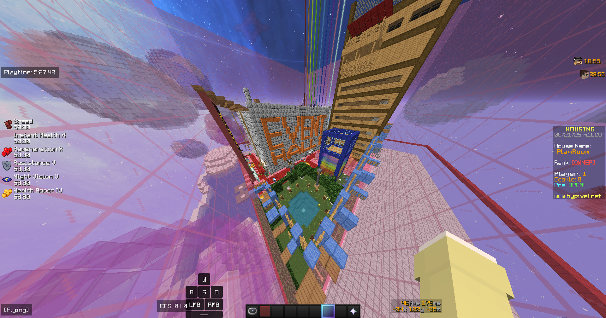

✨ 自己紹介
はじめまして！INFP-T（仲介者）のgamesken29sukiです。 このサイトは、私の内面の世界や、心惹かれるものたちを表現する場所です。 優しく温かいもの、独創的なアイデア、そして深い感情を大切にしています。
[具体的な自己紹介や、座右の銘、大切にしていることなどを記述]
📜 ブログ
🎨 趣味の紹介
[趣味 1]
心のままに表現できることが好きです。[具体的な説明]
[趣味 2]
想像力を刺激される瞬間が好きです。[具体的な説明]
[趣味 3]
平和な気持ちになれる活動です。[具体的な説明]
🎨 ギャラリー / 作品集
心のままに生み出した、私にとって大切な作品やデザイン、好きな風景の写真を展示しています。

穏やかな水彩画のような風景

自作の幻想的なデジタルイラスト

ミニマルなWebサイトデザインの習作
🤝 コミュニティ
参加組織
現在、[組織名]という場所で、[具体的な活動内容]に携わっています。価値観を共有できる素晴らしい仲間たちと出会えました。
Discordサーバー
私が管理・参加しているDiscordサーバー「[サーバー名]」を紹介します。ここでは、[サーバーのテーマ]について自由に語り合えます。 ぜひ遊びに来てください！